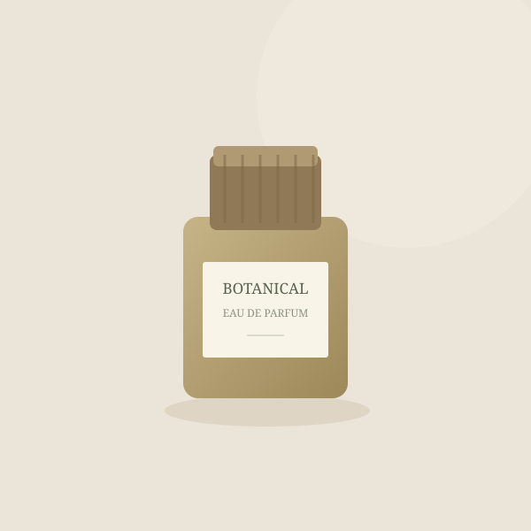

一键提取
从图片标签、懒加载属性和背景图中，收集页面已加载的商品图片。
为高效整理商品素材而生
从商品详情页到你的素材库，只需几次点击。
一键提取、自由勾选，批量保存为 PNG。

产品界面示意 · 原创 SVG 素材
LESS REPETITION, MORE CREATION
商品主图、细节图、背景图散在页面各处。逐张另存，再转换格式，让简单的素材整理变得繁琐。
图采集把已加载的商品图片集中到一个工作台。筛掉小图，挑出需要的，一次保存。整个过程在浏览器里完成。
从第一张图片开始 ↗SMALL TOOL. THOUGHTFUL DETAILS.
从提取到保存，让每一步都更顺手。
从图片标签、懒加载属性和背景图中，收集页面已加载的商品图片。
去重并过滤小于 100 × 100 的图片，支持继续按最小尺寸筛选。
新标签页网格展示，图片尺寸一目了然，选图不必来回切换。
全选、反选、仅看已选。需要哪些素材，由你决定。
在本地解码并转换 JPG、WebP 等格式，保留原始像素尺寸。
自动编号保存，显示真实下载进度；失败时清楚说明原因。
READY IN A FEW MINUTES
下载插件压缩包，解压到一个固定文件夹。
下载 v1.0.0 ↗在 Chrome 地址栏输入下方地址并回车。
打开扩展管理页面右上角的「开发者模式」开关。
开发者模式点击「加载已解压的扩展程序」，选择含 manifest.json 的文件夹。
完成，去商品页试试 →打开支持的商品详情页，滚动加载详情图片，点击右下角「获取图片」。在新标签页勾选后下载。刚安装插件时，请先刷新已有商品页。
插件面向淘宝、天猫、京东及拼多多商家商品详情页，提取当前页面中可读取且已加载的图片。平台登录、页面改版、防盗链或未授权的图片域名可能导致提取或下载失败，插件不会绕过访问限制。SVG、GIF 等可解码图片会转为静态 PNG。请只下载你拥有使用权的素材。
YOUR NEXT COLLECTION STARTS HERE
一个小工具，少一点重复，多一点从容。
↓ 下载图采集 · 免费使用v1.0.0 · 本地加载版 · 无需后端服务